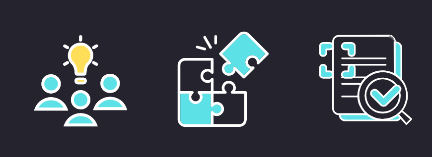

- שיפור השימושיות- על ידי הבנת התנהגויות ואתגרים של המשתמשים, מעצבים יכולים ליצור מוצרים אינטואיטיביים וקלים לשימוש, מה שישפר את שביעות הרצון של המשתמשים.
- קבלת החלטות מושכלת- אפיון מספק תובנות חשובות שאיתן אפשר להגיע להחלטות שונות בעיצוב, מתפקוד ועד אסתטיקה. הוא עוזר להעדיף תכונות החשובות ביותר למשתמשים.
- התאמה טובה יותר לשוק- מוצר אשר מאופיין היטב סביר שיצליח בשוק, משום שהוא עונה על צרכים והעדפות אמיתיות של המשתמשים. זה יכול להוביל לשיעורי אימוץ גבוהים ולנאמנות לקוחות.
- מחקר: אספו נתונים על קהל היעד שלך באמצעות סקרים, ראיונות, תצפיות וניתוחים. חפשו דפוסים ותובנות שמגלים התנהגויות והעדפות של המשתמשים.
- יצירת פרסונות: פתחו פרסונות משתמש מפורטות המבוססות על המחקר שלכם. הדמויות הבדיוניות הללו מייצגות פלחים שונים של קהל היעד שלכם ועוזרות להאניש את חוויית המשתמש.
- הגדרת תרחישים: תארו תרחישים ספציפיים שבהם הפרסונות שלכם ישתמשו במוצר. זה עוזר להבין את ההקשר והסביבה של השימוש במוצר.
- זיהוי צרכים ונקודות כאב : קבעו את הצרכים והאתגרים המרכזיים של הפרסונות שלך. המידע הזה ינחה את תהליך העיצוב ויבטיח שהמוצר מתמודד עם בעיות אמיתיות של המשתמשים.
- איטרציה ובדיקה: המשיכו לשפר את האפיון שלך על ידי בדיקת אב-טיפוס עם משתמשים אמיתיים. אספו משוב ובצעו שינויים נחוצים לשיפור המוצר.
- מחקר : אתם מבצעים סקרים וראיונות עם עובדים בגילאי 25-40. אתם מגלים שהם מתקשים למצוא זמן לאימונים וזקוקים לתרגילים מהירים ויעילים.
- יצירת פרסונות: תפתחו פרסונות כמו "שרה, מנהלת שיווק בת 30, עובדת שעות ארוכות " ו- "מייק, מפתח תוכנה בן 35, עם משפחה צעירה." פרסונות אלה מייצגות את קהל היעד שלכם.
- הגדרת תרחישים: אתם מתארים תרחישים שבהם "שרה" תשתמש באפליקציה במהלך הפסקת הצהריים ו"מייק" ישתמש בה בערב לאחר שהשכיב את הילדים לישון.
- זיהוי צרכים ונקודות כאב : אתם מזהים ש"שרה" זקוקה לאימונים קצרים בעצימות גבוהה ו"מייק" מעדיף תרגילים שניתן לבצע בבית עם ציוד מינימלי.
- איטרציה ובדיקה : אתם יוצרים אב-טיפוס של האפליקציה הכוללת אימונים מהירים ותרגילים עם ציוד מינימלי. אתם בודקים אותה עם משתמשים כמו "שרה ומייק", אוספים משוב ומשפרים את המוצר.
אחד המרכיבים המרכזיים והקריטיים ליצירת מוצר מוצלח הוא האפיון. אפיון כולל הבנה והגדרה של התכונות, ההתנהגויות והצרכים של קהל היעד, מה שמסייע בעיצוב מוצר שמתאים למשתמשים באופן מיטבי.
על מנת לבצע אפיון טוב נצטרך להבין לעומק את המשתמשים הפוטנציאליים של המוצר - את הדמוגרפיה, ההעדפות, ההתנהגויות, האתגרים והמטרות שלהם.
על ידי הכרת המשתמשים, נוכל לקבל החלטות מושכלות שמבטיחות שהמוצר עונה על הצרכים והציפיות של קהל היעד.
מדוע האפיון חשוב?
שלבי תהליך האפיון

לדוגמה
דמיינו שאתם חלק מצוות שמפתח אפליקציה לכושר לעובדים עסוקים. בואו נעקוב אחר תהליך האפיון שלכם-
לסיכום
אפיון הוא שלב חיוני בתהליך עיצוב המוצר. על ידי הבנה והגדרה של התכונות והצרכים של קהל היעד, ניתן ליצור מוצרים שמתחברים באמת למשתמשים. זכרו, ככל שתכירו את המשתמשים טוב יותר, כך תוכלו לעצב פתרון עבורם בצורה טובה יותר.